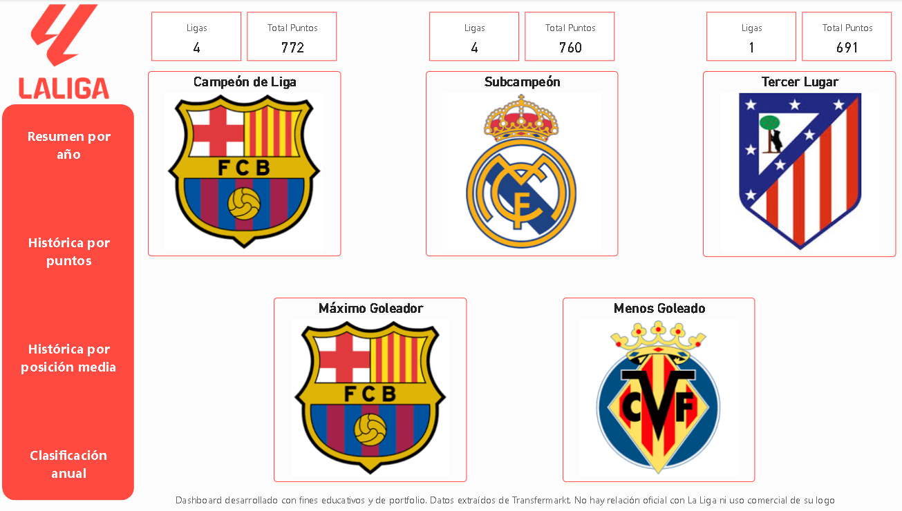
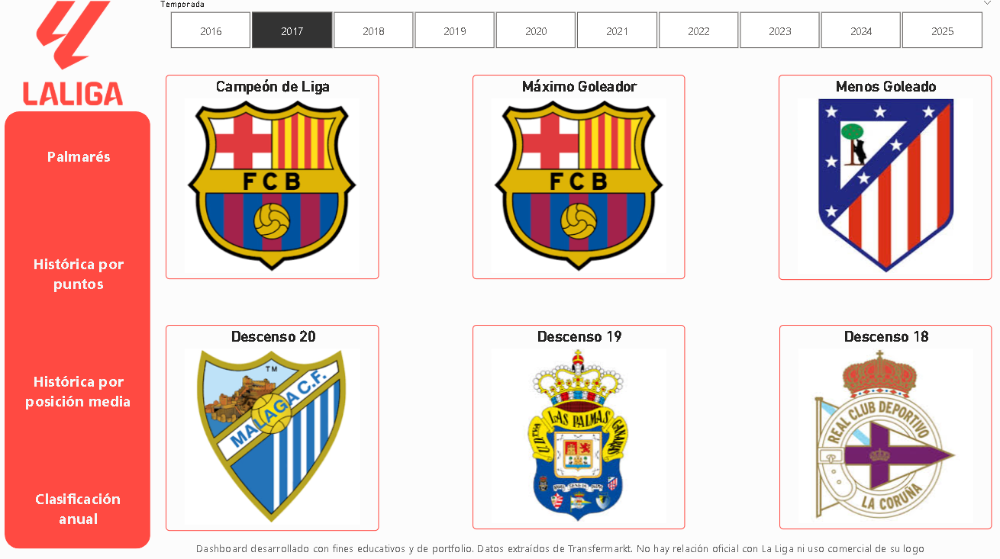
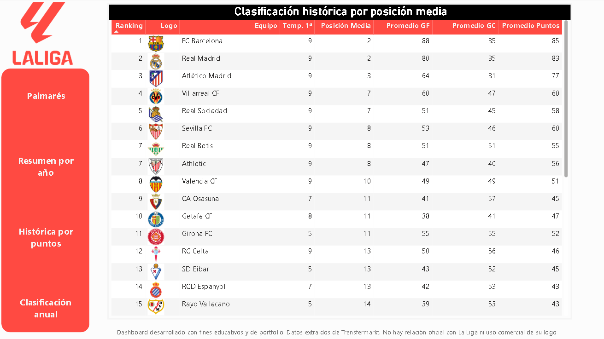
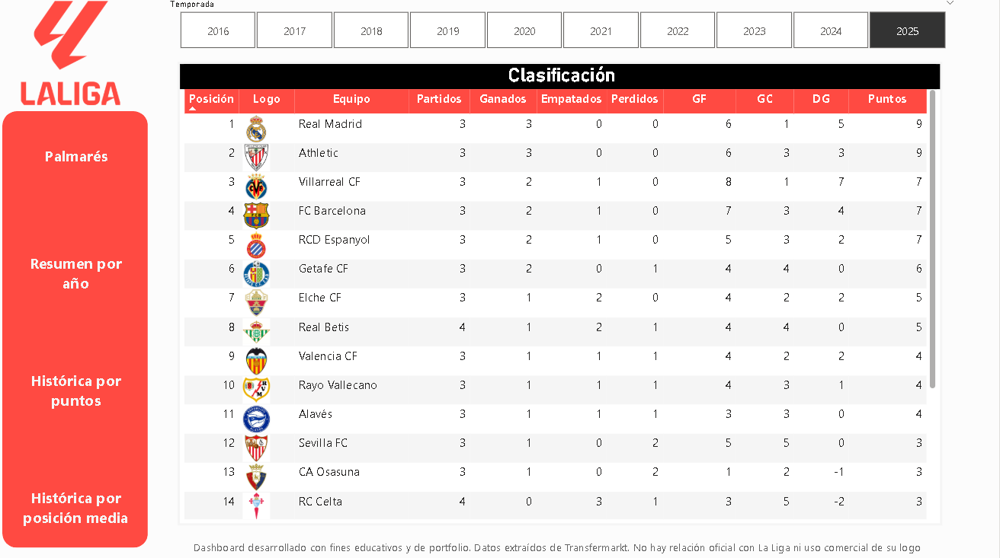

Contexto
Dataset de las clasificaciones históricas de LaLiga, la primera división española, incluyendo información de los últimos 10 años.
Los datos se obtienen desde Transfermarkt.
Objetivo: analizar la evolución de los equipos, sus puntos, goles y posiciones para obtener insights sobre rendimiento histórico y tendencias.
Objetivos del análisis
- Analizar la clasificación histórica de los últimos 10 años en términos de puntos, goles y posición media.
- Identificar los equipos más consistentes y los más irregulares.
- Evaluar el rendimiento de los máximos goleadores y los equipos menos goleados.
- Facilitar la visualización de las clasificaciones anuales y la comparación entre temporadas.
Estructura del Dashboard
Resumen por año
- Filtro por temporada.
- Visualiza el escudo del campeón, el máximo goleador, el equipo menos goleado y los 3 descendidos.
Clasificación histórica por puntos
- Suma de todos los indicadores de los últimos 10 años.
- Tooltip con gráfico de líneas mostrando la evolución del total de puntos por año.
Clasificación histórica por posición media
- Calcula posición media, goles a favor, goles en contra y puntos promedio en los últimos 10 años.
- Tooltip con la posición de cada equipo año por año.
Tabla de clasificaciones anuales
- Permite filtrar por temporada y ver la clasificación final de cualquier año, incluyendo la actual.
Técnicas y herramientas
- Power BI: dashboards interactivos con filtros y tooltips.
- DAX: medidas para cálculos de puntos totales, promedio de goles y posición media.
- Power Query: limpieza y transformación de datos.
Dataset
Fuente: Transfermarkt - LaLiga
Principales insights
- Barcelona lidera ambas clasificaciones históricas, con 12 puntos por encima del Real Madrid y diferencia de 0,11 en posición media.
- Villarreal es el equipo menos goleado en la última década, aunque no figura entre los tres primeros en palmarés.
- Las posiciones de clasificación por puntos y por posición media no siempre coinciden, mostrando la irregularidad de algunos equipos.
- Equipos como Sporting o Málaga solo han estado 1 y 2 temporadas en primera división en la última década.
- La evolución de puntos y posiciones permite identificar equipos consistentes frente a equipos con rendimientos fluctuantes.
Ejemplo de visualizaciones



